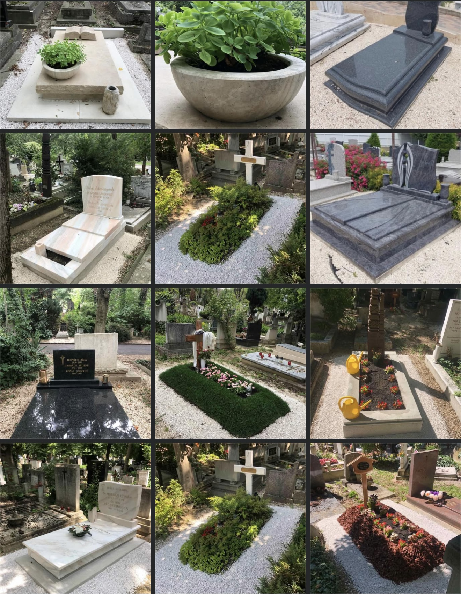
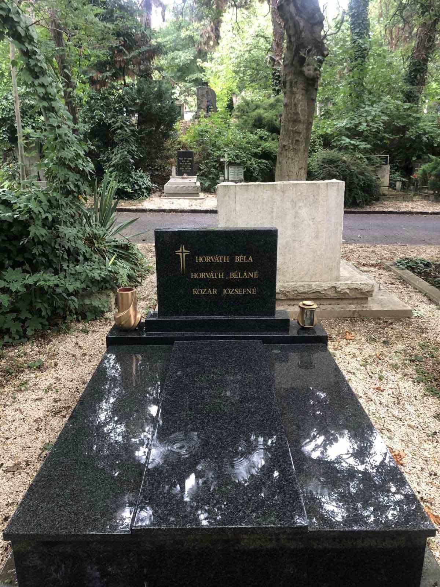
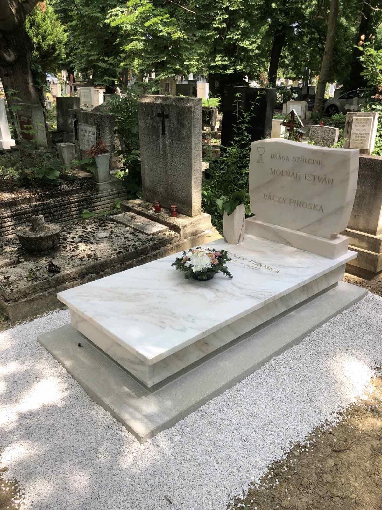
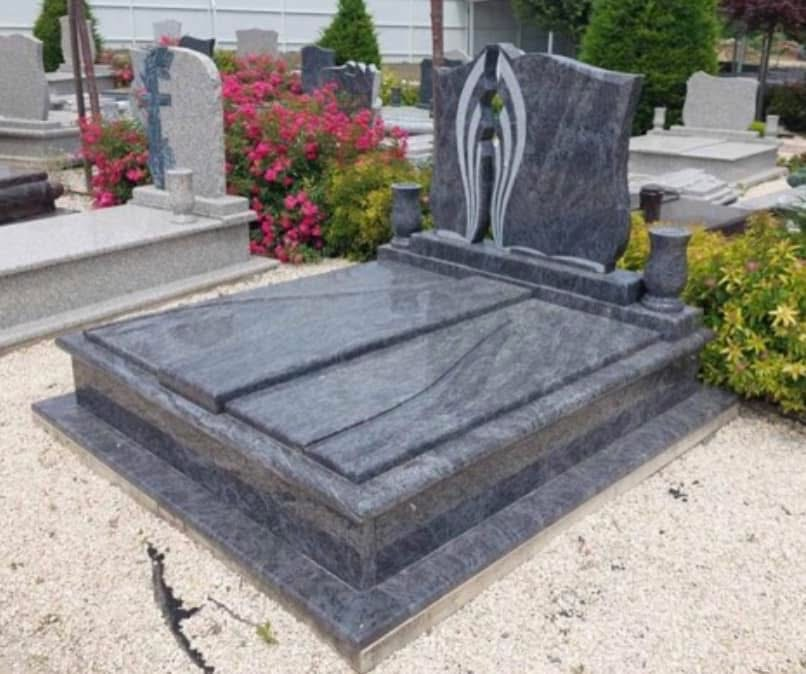
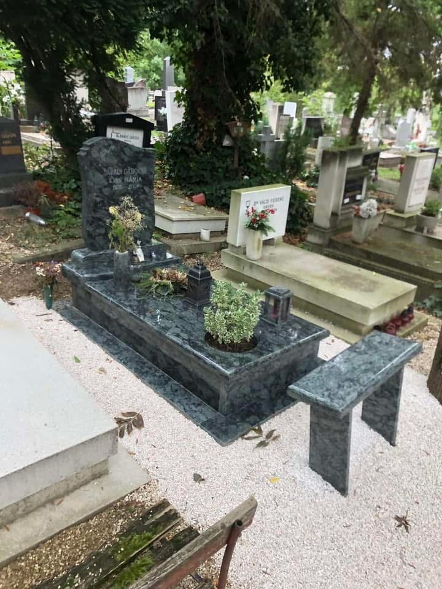
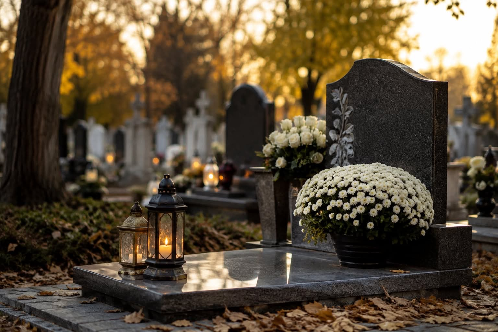

01
Sírkövek és síremlékek készítése
Egyedi igényekhez és elképzelésekhez igazodó síremlékek.
Sírkövek és síremlékek készítése, felújítása és gondos karbantartása. Személyes odafigyeléssel, az emlékezés tiszteletét szem előtt tartva.
Több mint 30 éves tapasztalattal segítünk síremlékek készítésében és meglévő sírkövek megújításában. Célunk, hogy minden munka tartós, igényes és méltó emléket őrizzen.
Új síremléket tervezne, vagy meglévő sírhelyet szeretne rendbe tenni? Vegye fel velünk a kapcsolatot, és egyeztessünk az igényekről.
KapcsolatfelvételA következő szolgáltatásokat a vállalkozás tényleges kínálatához igazítsátok közzététel előtt.
Egyedi igényekhez és elképzelésekhez igazodó síremlékek.
Meglévő síremlékek megújítása és felületük gondos kezelése.
Feliratok készítése és felújítása a síremlékhez illően.
A síremlék rendezett megjelenésének megőrzése.
Különböző kőanyagokból készülő síremlékek és részletek.
Vázák, fedlapok, virágföldtálak és egyéb kellékek pótlása az elérhető kínálat szerint.
Válogatás a Szindaj Sírkő munkáiból. A képek a vállalkozás által megadott referenciafotók.






A galéria fotói a vállalkozás által megadott képekből készültek. Közzététel előtt ellenőrizzétek, hogy a feliratok és síremlékek fotói nyilvánosan bemutathatók-e.
Az elérhető anyagok és színek pontos kínálatát egyeztessétek a vállalkozással.
Tartós, karakteres megjelenésű kőanyag síremlékekhez.
Klasszikus, elegáns megjelenésű természetes kő.
Az elképzelésekhez és a választott síremlékhez igazítva.
Kérjen tájékoztatást vagy személyre szabott árajánlatot telefonon.
A térkép beágyazása a pontos helyszín ellenőrzése után adható hozzá.
Útvonal keresése a Google Térképen ↗